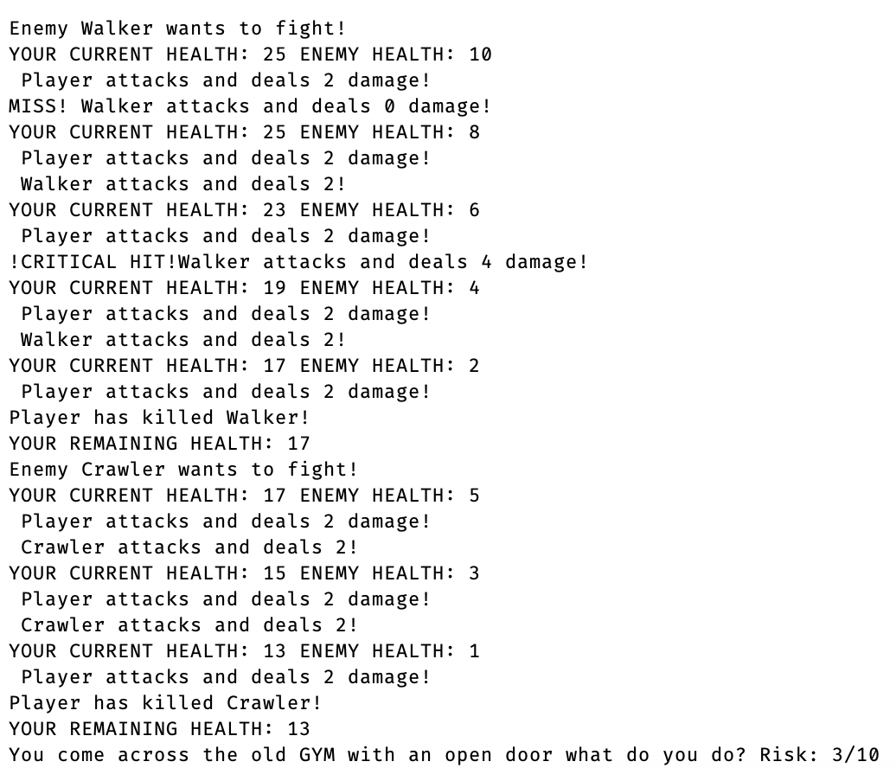

FROGGER

This is a remake on the 1981 classic Frogger built in html, css, and Javascript using the Document Object Model. The goal of the game is to navigate across
the obstacles and land in the safe spaces across the map. Some added features include a continue feature, multiple worlds, and scaling difficulty. If I were to make
this game again I would use classes instead of reusing function multiple times for each obstacle
Highlights
- Practice with working with another programmer
- More experience with using the D.O.M
- Experience with the agile workflow
- Practice with the centralized git workflow
Island Escape

This is my first game that I ever made in the Unity engine. This project took me about
1 year of off and on again coding. I used the asset store for the art used
in the game and some basic scripts. If I were to do it again I would have made my project files more organized.
Highlights
- Learned how to use Unity
- Got fimilar with C#
- Use animations
- Scripts refrencing each other
Choose Your Own Adventure: Python

This is a choose your own adventure game built in python using Object Oriented Programming. The premise is you have to navigate through Lancaster City
in a post apocolyptic setting. Some features include: combat, looting, inventory system, and a unique map each playthrough. We were only given a week to
work on it, but I am happy with the result.
paths.
Highlights
- Practice with Object Oriented Programming
- Experience with working with multiple python files
- Experience with working on a time crunch
- Working with classes
 Click here to view the code on Github
Click here to view the code on Github Windows
Windows Mac
Mac  Download
Download